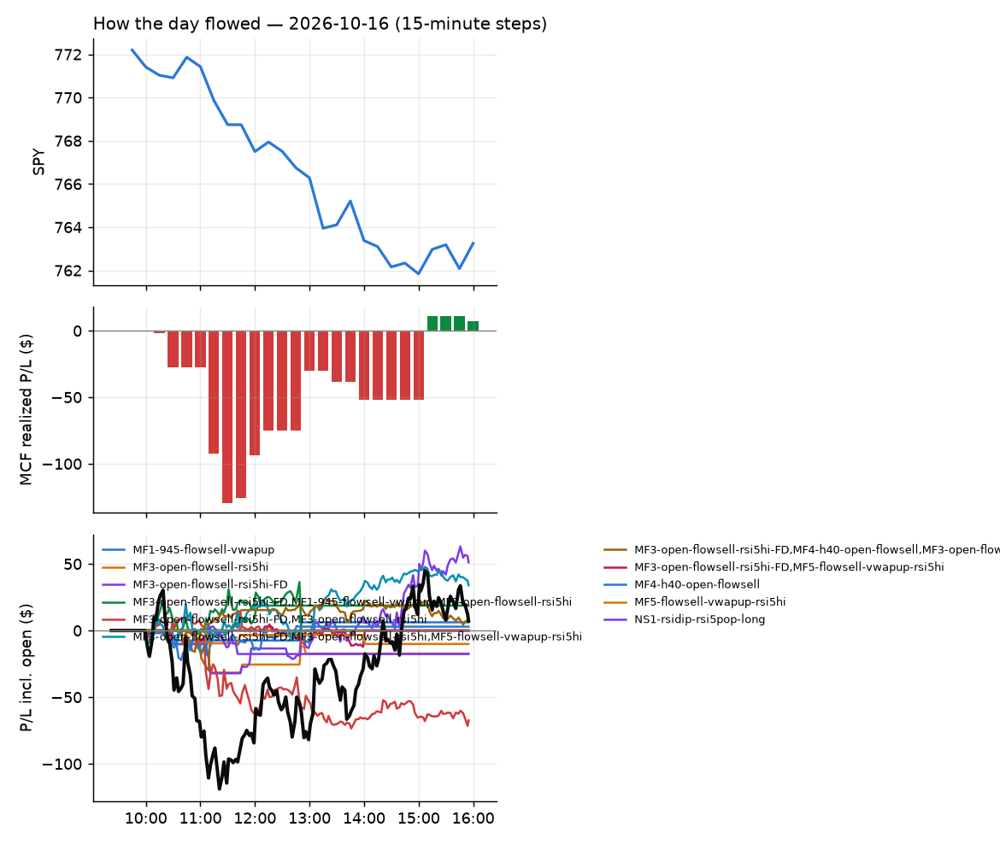
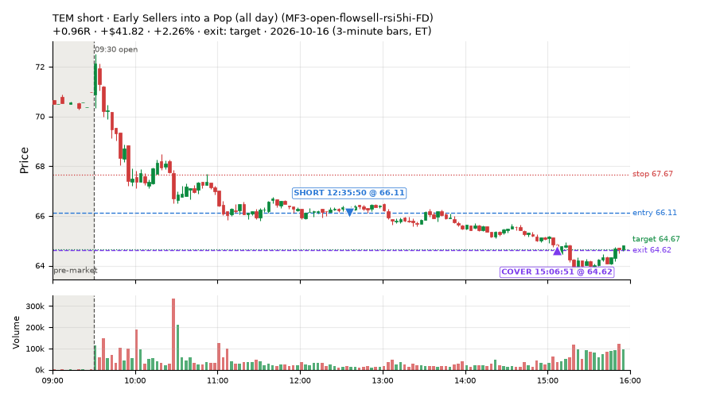
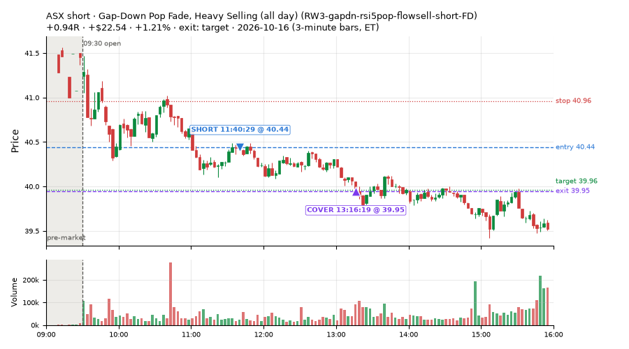
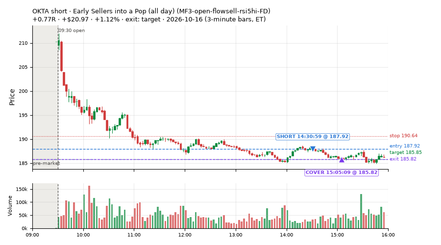
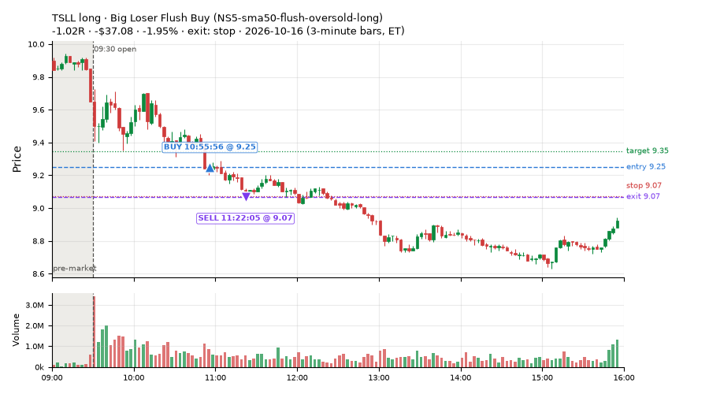
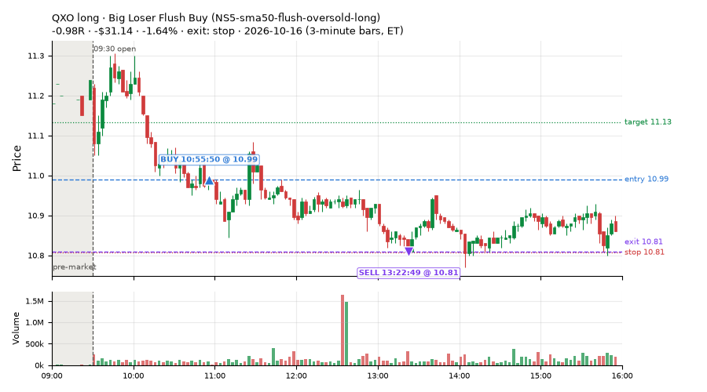
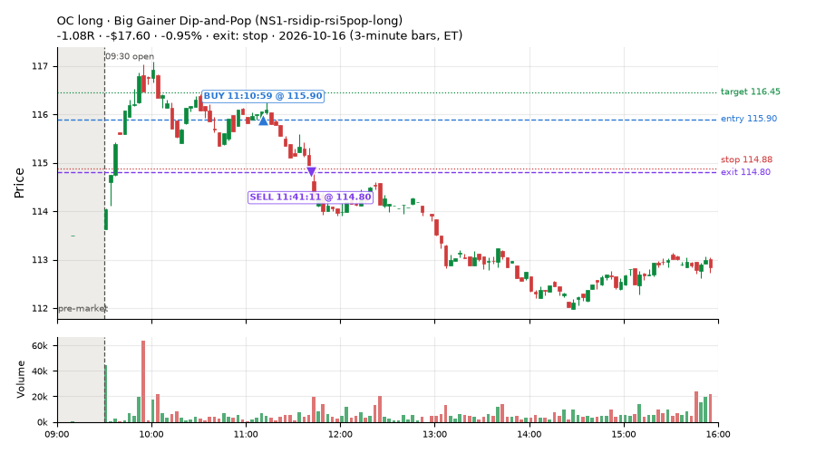
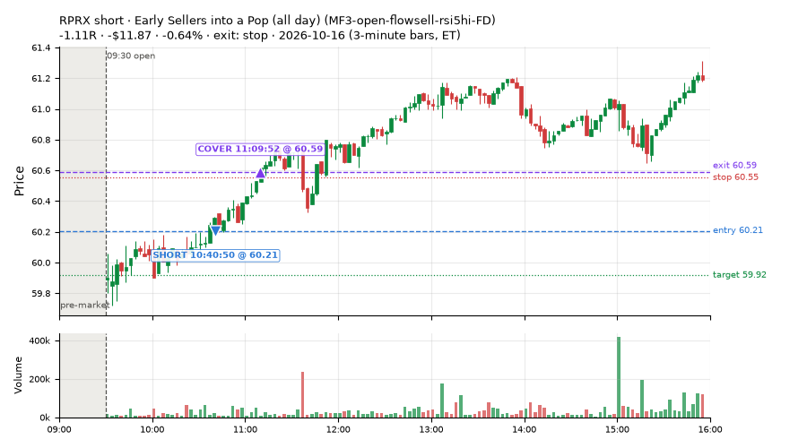
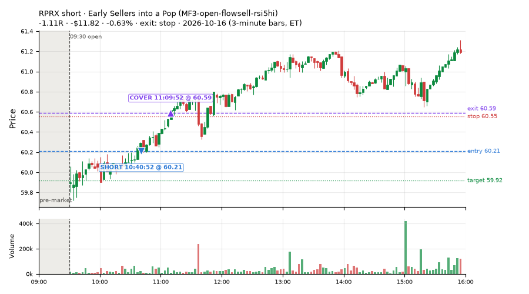

36 trades · win rate 47% · P/L $7.17
PROBATION: no live setup has passed both locked test periods. 10 owner-directed setups added 2026-10-08 (MarcoFlow top 5 + 5 new), untested live. RW6G1 (RW6 + VWAP band guard) added 2026-10-09, probation.

| Symbol | Setup | Side | In | Out | Entry | Exit | Exit reason | % gained | P/L |
|---|---|---|---|---|---|---|---|---|---|
| TEM | Early Sellers into a Pop (all day) (MF3-open-flowsell-rsi5hi-FD) | short | 12:35 | 15:06 | 66.11 | 64.62 | target | +2.26% | $41.82 |
| ASX | Gap-Down Pop Fade, Heavy Selling (all day) (RW3-gapdn-rsi5pop-flowsell-short-FD) | short | 11:40 | 13:16 | 40.44 | 39.95 | target | +1.21% | $22.54 |
| OKTA | Early Sellers into a Pop (all day) (MF3-open-flowsell-rsi5hi-FD) | short | 14:30 | 15:05 | 187.92 | 185.82 | target | +1.12% | $20.97 |
| Symbol | Setup | Side | In | Out | Entry | Exit | Exit reason | % lost | P/L |
|---|---|---|---|---|---|---|---|---|---|
| TSLL | NS5-sma50-flush-oversold-long | long | 10:55 | 11:22 | 9.25 | 9.07 | stop | -1.95% | $-37.08 |
| QXO | NS5-sma50-flush-oversold-long | long | 10:55 | 13:22 | 10.99 | 10.81 | stop | -1.64% | $-31.14 |
| OC | NS1-rsidip-rsi5pop-long | long | 11:10 | 11:41 | 115.90 | 114.80 | stop | -0.95% | $-17.60 |
| RPRX | MF3-open-flowsell-rsi5hi-FD | short | 10:40 | 11:09 | 60.21 | 60.59 | stop | -0.64% | $-11.87 |
| RPRX | MF3-open-flowsell-rsi5hi | short | 10:40 | 11:09 | 60.21 | 60.59 | stop | -0.63% | $-11.82 |








Signal to fill: median 1s, 90th percentile 3s (36 trades). Bars close each minute; the order follows the bar close.
Best excursion (MFE): median 0.69R; worst (MAE) median 0.81R. 11% of trades never got +0.25R in our favour; 3 reached +1R and still closed at or below 0.
| Symbol | Setup | Best R | Worst R | Closed R |
|---|---|---|---|---|
| ENB | MF3-open-flowsell-rsi5hi | +1.11 | -1.01 | -1.01 |
| ENB | MF3-open-flowsell-rsi5hi-FD | +1.11 | -1.01 | -1.01 |
| ENB | MF1-945-flowsell-vwapup | +1.11 | -1.01 | -1.01 |
| HRL | MF1-945-flowsell-vwapup | +0.83 | -1.24 | -1.24 |
| CUBE | MF3-open-flowsell-rsi5hi-FD | +0.54 | -1.28 | -1.13 |
| Entry time | Trades | Win | Avg R | P/L |
|---|---|---|---|---|
| 09:50-10:30 | 12 | 25% | -0.37 | $-26.84 |
| 10:30-11:30 | 13 | 54% | -0.20 | $-64.70 |
| 11:30-13:00 | 8 | 62% | +0.30 | $77.41 |
| 14:00-16:00 | 3 | 67% | +0.25 | $21.30 |
| Setup | Trades | Win | Avg R | Adj R (net of SPY) | P/L |
|---|---|---|---|---|---|
| Early Sellers Above VWAP (MF1-945-flowsell-vwapup) owner-directed; holdouts once: Sep-Oct +0.169R n86, Apr-Jun -0.050R n429 | 3.0 | 33% | +0.17 | -0.59 | $6.19 |
| Early Sellers into a Pop (MF3-open-flowsell-rsi5hi) owner-directed; holdouts once: Sep-Oct -0.059R n170, Apr-Jun -0.034R n729 | 6.0 | 33% | -0.42 | -1.32 | $-17.30 |
| Early Sellers into a Pop (all day) (MF3-open-flowsell-rsi5hi-FD) | 12.0 | 50% | -0.10 | -0.69 | $51.16 |
| Early Sellers, Strong Heat (MF4-h40-open-flowsell) owner-directed; holdouts once: Sep-Oct -0.117R n147, Apr-Jun -0.017R n735 | 2.0 | 50% | -0.36 | -0.77 | $2.92 |
| Sellers into Strength (all day) (MF5-flowsell-vwapup-rsi5hi) owner-directed; holdouts once: Sep-Oct -0.001R n264, Apr-Jun -0.010R n1199 | 3.0 | 33% | -0.52 | -1.46 | $-10.06 |
| Big Gainer Dip-and-Pop (NS1-rsidip-rsi5pop-long) owner-directed; holdouts once: Sep-Oct +0.326R n10, Apr-Jun +0.056R n119 | 1.0 | 0% | -1.08 | -1.04 | $-17.60 |
| Afternoon VWAP Reclaim Fade (NS4-pm-vwap-reclaim-oversold-short) owner-directed; holdouts once: Sep-Oct -0.086R n49, Apr-Jun -0.080R n342 | 1.0 | 100% | +2.15 | +1.43 | $18.72 |
| Big Loser Flush Buy (NS5-sma50-flush-oversold-long) owner-directed; holdouts once: Sep-Oct -0.008R n73, Apr-Jun +0.002R n231 | 3.0 | 33% | -0.65 | -0.07 | $-67.32 |
| Gap-Down Pop Fade, Heavy Selling (all day) (RW3-gapdn-rsi5pop-flowsell-short-FD) | 3.0 | 100% | +0.58 | +0.22 | $33.98 |
| Gap-Down Pop Fade (all day) (RW5-heat30-flowsell-rsi5pop-gapdn-short-FD) | 2.0 | 50% | +0.37 | -0.17 | $6.48 |
Market direction (SPY, beta 1) accounted for $152.95 of today's $7.17; the rest ($-145.78) came from the setups themselves. Avg R net of SPY: -0.65 (incl. a hedge leg's cost; report only).
12 setups live today. Today: 59 signals, 36 taken, 6 lost because another setup held the symbol (10%). Since 2026-10-06 (9 sessions): 497 signals, 311 taken, 39 lost to other setups (8%). Peak open positions today 19 of 160 slots. Earnings blackout removed 353 symbols before scanning.
Simulated playing time (not live): 184 what-if trades of signals not taken, avg -0.05R, 51% winners; of them 39 lost to another setup (avg -0.12R).
Silent: intraday_momentum · Crowded out: MF5-flowsell-vwapup-rsi5hi · Starved: NS4-pm-vwap-reclaim-oversold-short
| Prio | Setup | Today sig / taken | Sessions | Signals / taken / trades | Taken/day | Expected/day | Lost to other setups | Lost to (setup n) | Top skip reasons | SIMULATED: not-taken n / avg R / win | Verdict |
|---|---|---|---|---|---|---|---|---|---|---|---|
| 1 | Gap-Down Pop Fade (all day) RW5-heat30-flowsell-rsi5pop-gapdn-short-FD | 3 / 2 | 1 | 3 / 2 / 2 | 2.00 | 12.79 | 0 | – | spread / quote / size 1 | 1 / +0.84R / 100% | watch 2.00 entries/day vs ~12.79 expected |
| 2 | Gap-Down Pop Fade, Heavy Selling (all day) RW3-gapdn-rsi5pop-flowsell-short-FD | 5 / 3 | 1 | 5 / 3 / 3 | 3.00 | 13.59 | 0 | – | not shortable / shorts off 1, spread / quote / size 1 | 2 / +0.38R / 50% | watch 3.00 entries/day vs ~13.59 expected |
| 3 | Early Sellers into a Pop (all day) MF3-open-flowsell-rsi5hi-FD | 14 / 12 | 1 | 14 / 12 / 12 | 12.00 | 24.16 | 0 | – | spread / quote / size 2 | 2 / -0.20R / 50% | ok 60.0 entries/week |
| 4 | Big Gainer Fade with VWAP Band Guard RW6G1-ns2-up3-vwap2sd-short | 0 / 0 | 6 | 5 / 3 / 3 | 0.50 | 0.40 | 0 | – | not shortable / shorts off 1, spread / quote / size 1 | 2 / +0.22R / 50% | slow 2.5 entries/week; ~24 weeks to 60 trades |
| 5 | Big Gainer Dip-and-Pop NS1-rsidip-rsi5pop-long | 1 / 1 | 7 | 7 / 6 / 6 | 0.86 | 0.92 | 0 | – | spread / quote / size 1 | 1 / +0.32R / 100% | slow 4.3 entries/week; ~14 weeks to 60 trades |
| 6 | Early Sellers, Mid-High RSI MF2-open-rsimidhi-flowsell | 1 / 0 | 7 | 8 / 4 / 4 | 0.57 | 1.30 | 0 | – | not shortable / shorts off 2, spread / quote / size 2 | 4 / -0.34R / 25% | slow 2.9 entries/week; ~21 weeks to 60 trades |
| 7 | Big Loser Flush Buy NS5-sma50-flush-oversold-long | 5 / 3 | 7 | 11 / 9 / 9 | 1.29 | 2.41 | 0 | – | spread / quote / size 2 | 2 / +0.85R / 100% | slow 6.4 entries/week; ~9 weeks to 60 trades |
| 8 | Afternoon VWAP Reclaim Fade NS4-pm-vwap-reclaim-oversold-short | 1 / 1 | 7 | 7 / 4 / 4 | 0.57 | 3.05 | 0 | – | not shortable / shorts off 3 | 3 / -1.16R / 0% | starved 0.57 entries/day vs ~3.05 expected |
| 9 | Early Sellers Above VWAP MF1-945-flowsell-vwapup | 7 / 3 | 7 | 27 / 12 / 12 | 1.71 | 5.33 | 1 | MF4-h40-open-flowsell 1 | spread / quote / size 12, not shortable / shorts off 2, symbol held by another setup 1 | 15 / -0.33R / 33% | slow 8.6 entries/week; ~7 weeks to 60 trades |
| 10 | Early Sellers, Strong Heat MF4-h40-open-flowsell | 6 / 2 | 7 | 33 / 18 / 18 | 2.57 | 7.24 | 4 | MF3-open-flowsell-rsi5hi 3, MF5-flowsell-vwapup-rsi5hi 2, MF3-open-flowsell-rsi5hi-FD 2 | not shortable / shorts off 6, spread / quote / size 5, symbol held by another setup 4 | 15 / -0.05R / 60% | slow 12.9 entries/week; ~5 weeks to 60 trades |
| 11 | Early Sellers into a Pop MF3-open-flowsell-rsi5hi | 7 / 6 | 7 | 42 / 24 / 24 | 3.43 | 9.19 | 10 | MF4-h40-open-flowsell 6, MF1-945-flowsell-vwapup 3, NS2-sma50break-overbought-short 1 | symbol held by another setup 10, spread / quote / size 5, not shortable / shorts off 3 | 18 / -0.32R / 44% | ok 17.1 entries/week |
| 12 | Sellers into Strength (all day) MF5-flowsell-vwapup-rsi5hi | 9 / 3 | 7 | 65 / 28 / 28 | 4.00 | 15.47 | 22 | MF3-open-flowsell-rsi5hi 13, MF1-945-flowsell-vwapup 6, MF4-h40-open-flowsell 6 | symbol held by another setup 22, spread / quote / size 10, not shortable / shorts off 3 | 37 / -0.23R / 46% | crowded-out 22 of 65 signals (34%) lost to setups already holding the symbol |
Every trade is attached as a CSV you can open and edit in Excel or Google Sheets. Live page: https://misiti15.github.io/MCF/live/